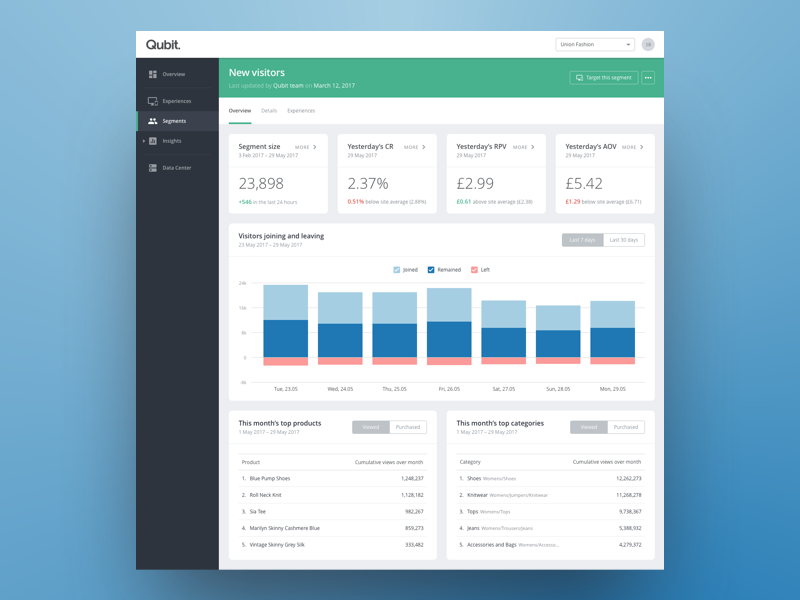
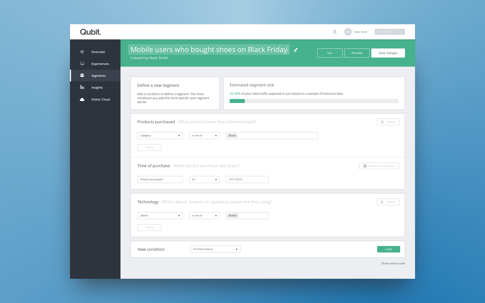
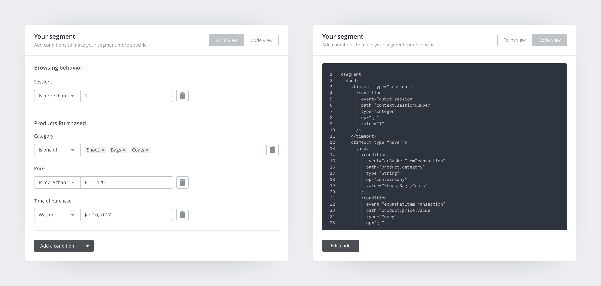
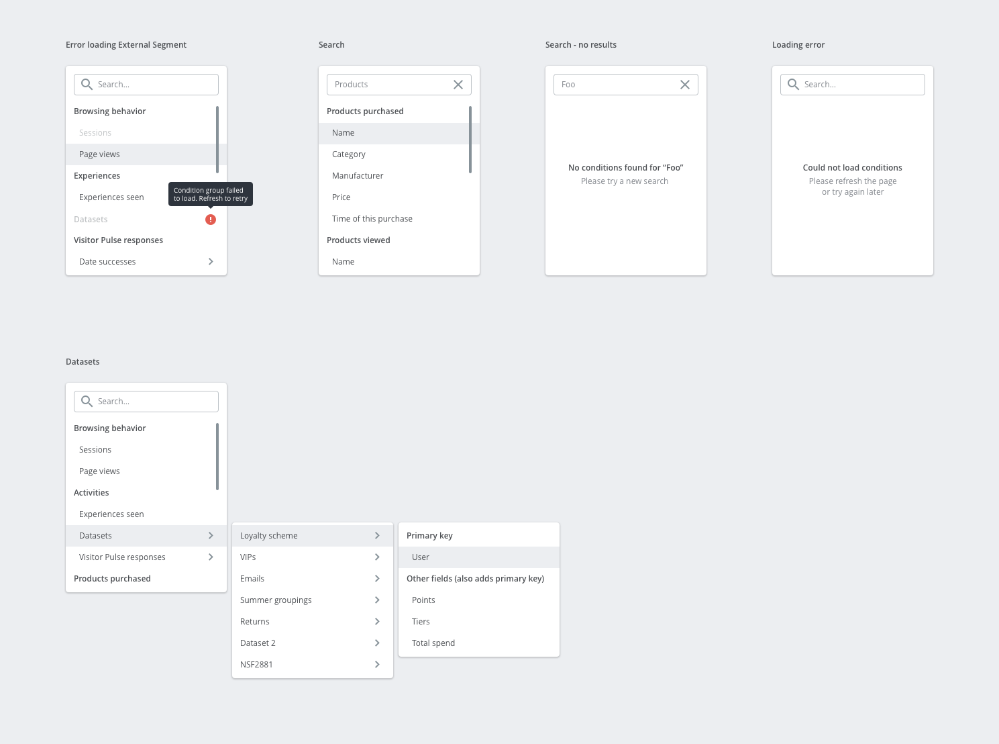

Product Design
QUBIT SEGMENTS
Segments was one of the first products I worked on after joining the Qubit Product team. It's a segmentation tool that ties in with the rest of the Qubit platform to allow businesses to personalise content for different groups of visitors.
The Qubit platform is super powerful, and one of the challenges with Segments was how to harness that power without making a product that you need a degree to use. I worked with the engineers to iterate on our early concepts, testing with clients as we went along.
The Qubit platform is super powerful, and one of the challenges with Segments was how to harness that power without making a product that you need a degree to use. I worked with the engineers to iterate on our early concepts, testing with clients as we went along.
WHAT
UX design
UI design
User research
Data visualisation
Form design
Animation
UI design
User research
Data visualisation
Form design
Animation
WHEN
2017

The segment metrics page. The place to discover how a group of visitors behaves.
SEGMENT METRICS
The most recent update to Segments has been a whole new reporting screen. Helping clients say goodbye to one size fits all personalisation! Before redesigning this page we had some pretty basic metrics that didn't really tell you much about the group of visitors. We did a lot of sessions with clients through the design and build process to make sure we made this page as useful and engaging as possible.

One of the original segment builders. I worked on this version in the early days of Segments
SEGMENT BUILDER
It was a quiet period in the office, might have been at Christmas. We had an operating segment builder but there were issues we wanted to fix. So I set about a redesign of the whole builder, focusing on how people go about adding the building blocks of a segment. So we went from selecting a category and hoping a condition was part of that group, to simply selecting the exact condition you wanted, having the category there as additional context.
I improved the summary section, and put it down the side so that not matter how long your segment was, you could see the estimated traffic that would be part of it.
I improved the summary section, and put it down the side so that not matter how long your segment was, you could see the estimated traffic that would be part of it.

The new and improved segment builder!

The two parts of the segment builder. The form view lets you create a segment with common attributes and the code view gives you the ability to specific custom attributes

Some of the dropdown states for adding a new condition.
SIDE PANEL DEVELOPMENT
The side panel in the updated builder started out as an improvement to the segment summary. This worked well when using the form view, but we were unable to generate a summary when a segment was written in code. So I used this space to help people get the most out of using code to create segments. This included a lookup for potential types of conditions (along with their formatting requirements), troubleshoot tools, and help guides.